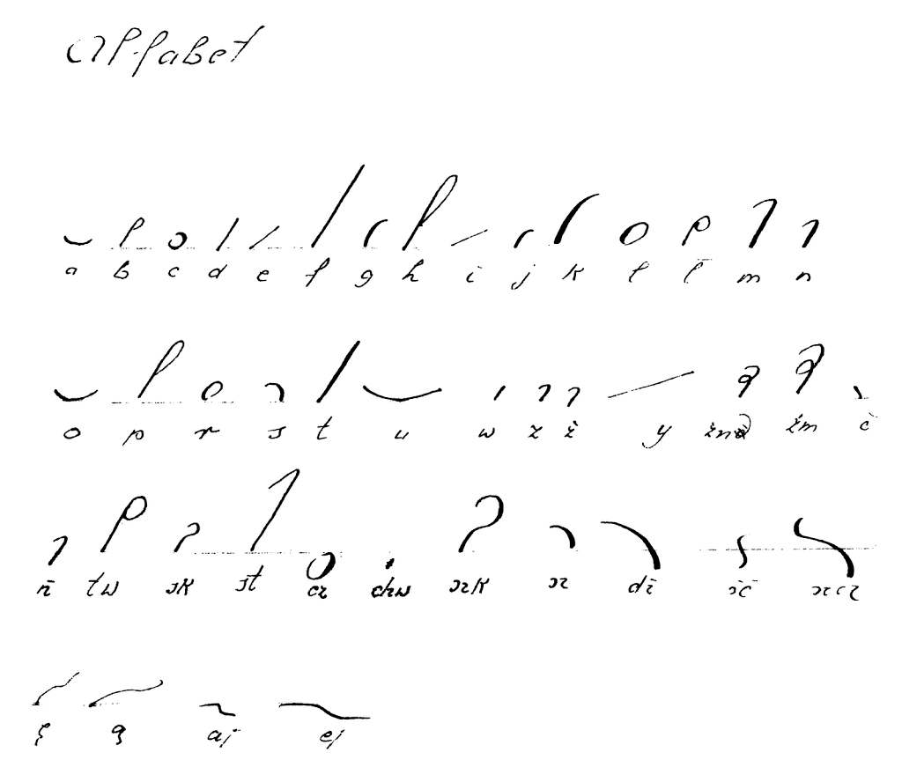
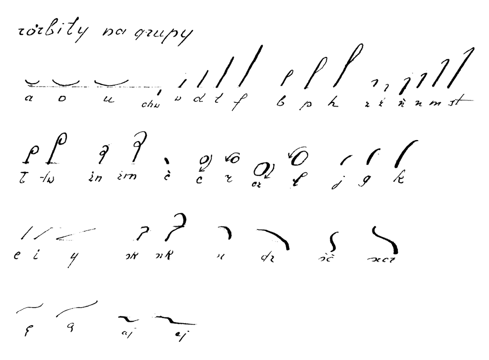

International
InternationalWszystko (prawie, jak zwykle) o systemie Ożarowskiego
2012-10-22 | autor: flamenco108Witam. Dziś rarytet. System F.K. (nie dowiedziałem się jeszcze, co znaczą te inicjały) Ożarowskiego w kilku linkach poniżej - prawie wszystko, co (zgodnie z wiedzą Szymona Tauba i Władysława Chrapusty) zostało w tej sprawie wydane.
System ten jest podwójną ciekawostką w dzisiejszych czasach. Po pierwsze primo, jest to jedyny przekład Rollera na polski. A w ogóle dostępność systemu Rollera jest niewielka (znalazłem podręcznik do stenografowania w Volapueku, ale nie po niemiecku). Po drugie primo, system ten okazuje się interesujący dla umysłów ścisłych, matematycznych. A to dlatego, że jest prosty i bardzo regularny, o czym z pewnością będziecie mogli się przekonać podczas lektury opublikowanych podręczników.
Najsampierw, dla zapoznania z historią tego arcyciekawego systemu, poniżej prezentuję wypiski z “Dziejów stenografii” (zwracam uwagę na stenograficzny styl poniższych zdań i niejednokrotnie brak redakcji, więc Wy już nie musicie zwracać na to uwagi):

s.113. Roller-Ożarowski wykształcił nielicznych stenografów, z których kilku utrzymało się w biurze Rady miasta Warszawy (1918);
s.116. §§§. Ożarowski i kilku zwolenników (czek) jego systemu pracuje w biurze Rady Miejskiej w Warszawie.
s.159.
Dalej powstają przekłady systemów wypisujących samogłoski w Warszawie, jako to Rollera przez Ożarowskiego (1904), (w rękopisie pozostał podobny przekład Sobczyńskiego w Szydłowie 1905), (…) W r. 1914 wychodzi 2 wydanie Ożarowskiego (Roller),
s.160. Wszystkie jednak te systemy nie obejmują szerszego terenu, ich wpływ jest minimalny, sięga co najwyżej do kilku szkół w tej miejscowości, gdzie autorzy systemów przebywają. Próbował także Ożarowski w Warszawie i na prowincji rozpowszechniać swój system, stara się o biuro stenograficzne sejmu, ostatecznie jednak udało mu się dla, kilku swoich zwolenników, względnie zwolenniczek uzyskać posady stenografów (ek) w Magistracie warszawskim i po kilku latach swej działalności znika z areny.
s.166.
Inne systemy wykazują znikomą ilość wydawnictw i całkiem małą działalność. Roller-Ożarowski (1 podręcznik w 2 wydaniach, 2 Czytanki, 1 Dyktator, 1 numer czasopisma, kilka stenografek w Warszawie, 1 wystawa sten.). Roller- Sobczyski (1),
s. 405. Jako pierwsze biuro stenograficzne, ale nie sejmowe, powstało u progu niepodlegości Polski biuro stenograficzne Rady Miasta Warszawy. W r. 1917 postanowiła Rada Miejska w Warszawie wprowadzić stenograficzne sprawozdania ze swych posiedzeń. Zwrócono się podobno do Gumińskiego, ale ponieważ warunki wynagrodzenia postawione przez niego były w stosunku do drugiego oferenta Ożarowskiego (system Rollera) o wiele wyższe, oddano biuro Ożarowskiemu. Kierował niem początkowo sam Ożarowski, potem siostra jego Brzozowska, wreszcie jest dotychczas kierowniczką tego biura uczennica jego Janina z Tomaszewskich Herdanowa. Podobno i w biurze sten. Rady Miasta Łodzi miał pierwotnie by stosowany system Ożarowskiego, potem Polińskiego.
s. 437. Powtórzyć tu tylko można, że słabe rozpowszechnienie wśród reszty systemów zyskał jedynie Ożarowski (Roller), którego uczennica p. Tomaszewska-Herdanowa jest kierowniczką biura stenograficznego Rady miasta Warszawy. Uczniowie nie chwalą sobie tego systemu.

W poniżej zaprezentowanych linkach jest także odręczny przykład “Ojcze nasz” ręką Tomaszewskiej-Herdenowej (nie zaś “Herdanowej”, jak błędnie zapisał Taub). Chętnie bym się dowiedział więcej o tym człowieku. Może kiedyś wypłynie więcej danych.
A na razie zapraszam do lektury, podziwiajcie, zapoznajcie się… Smacznego!
2012-10-22 autor: flamenco108